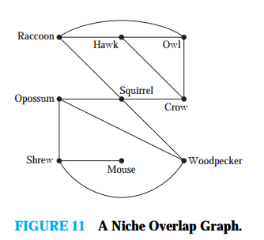
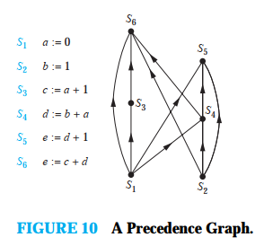

Вежба 1. Draw graph models, stating the type of
graph (from Table 1 ) used, to represent airline routes where
every day there are four flights fom Boston to Newark, two flights
fom Newark to Boston, three flights fom Newark to Miami, two
flights fom Miami to Newark, one flight fom Newark to Detroit, two
flights fom Detroit to Newark, three flights fomNewarkto
Washington, two flights fom Washington to Newark, and one flight
fom Washington to Miami, with:
едноставен граф
мултиграф
псеудограф
Едноставен ориентиран граф
Ориентиран мултиграф
a) a edge between vertices representing cities that have a flight
between them (in either direction).
Решение

Решение

Решение

Решение

Решение
Вежба 2. What kind of graph (from Table 1 ) can
be used to model a highway system between major cities where:
едноставен граф
мултиграф
псеудограф
a) there is an edge between the vertices representing cities if
there is an interstate highway between them?
Решение
Решение
Решение
Вежбите 3 до 9 се дадени како аудиториска вежба 1.
Вежба 10. За секој неориентиран граф во вежбите
3-9 кој не е едноставен, најди го множеството на ребра кои треба
да се отстранат па графот да стане едноставен.
Графот е едноставен бидејки нема повеќе од едно ребро
помеѓу било кој пар на јазли
Графот е мултиграф. За да стане едноставен треба да се
отстрани едно ребро помеѓу јазлите `{a, b)` и две ребра
помеѓу јазлите `{b, d}`.
Графот е псеудограф. За да стане едноставен треба да се
отстрани едно ребро помеѓу јазлите `{a, b)` едно ребро
помеѓу јазлите `{b, d}` и едно помеѓу ребрата `{c, d}`.
Исто така треба да се отстранат и алките кајјазлите `a, b,
d`.
Графот е мултиграф. За да стане едноставен треба да се
отстрани едно ребро помеѓу јазлите `{a, c)` и две ребра
помеѓу јазлите `{b, d}`.
Графовите се ориентирани и вежбата на се однесува за нив.
вежба 3.
Решение
Решение
Решение
Решение
Решение
Вежба 11. Нека `G` е едноставен граф. Покажи
дека релацијата `R` во множеството на јазли од `G` таква да
`uRv` ако и само ако постои ребро `{u, v}` е симетрична,
непостоечка релација во `G`.
Релацијата `R` во множеството `G` е симетрична ако `(b, a)
in R` секогаш кога `(a, b) in R`
Решение
Релацијата `R` во множеството `G` е непостојана ако `(a,
a) notin R` за секој елемент `а in G`
Дадено е дека `G` е едноставен граф.
`R = {(u, v) | `Постои ребро помеѓу јазолот ` u ` и `
v.}`
Треба да се докаже дека `R` е симетрична и непостојана
релација.
Симетрична релација: Нека `(a, b) in
R`
Бидејки графот е едноставен пости ребро помеѓу јазлите
`(a, b)`
Бидејки ребрата кај едноставниот граф се неориентирани
следи дека постои и реброто `(b, a)` односно `(b, a) in
R`.
Со ова покажавме дека релацијата е симетрична.
Непостоечка релација: Нека `a` е јазол во
`G`.
Кај едноставниот граф нема алки (ребро кое почнува и
завршува во ист јазол) па од тука `(a, a) not in R`
Со ова се покажа дека релацијата R е непостоечка.
Вежба 12. Нека `G` е неориентиран граф со алки
на секој јазол. Покажи дека релацијата `R` во множеството на
јазли од `G` таква да `uRv` ако и само ако постои ребро `{u, v}`
е симетрична, постојана релација во `G`.
Релацијата `R` во множеството `G` е симетрична ако `(b, a)
in R` секогаш кога `(a, b) in R`
Решение
Релацијата `R` во множеството `G` е непостојана ако `(a,
a) notin R` за секој елемент `а in G`
Дадено е дека `G` е неориентиран граф.
`R = {(u, v) | `Постои ребро помеѓу јазолот ` u ` и `
v.}`
Треба да се докаже дека `R` е симетрична и непостојана
релација.
Симетрична релација: Нека `(a, b) in
R`
Бидејки графот е едноставен пости ребро помеѓу јазлите
`(a, b)`
Бидејки ребрата кај едноставниот граф се неориентирани
следи дека постои и реброто `(b, a)` односно `(b, a) in
R`.
Со ова покажавме дека релацијата е симетрична.
Постоечка релација: Нека `a` е јазол во
`G`.
Бидејки кај секојјазол има алки па од тука `(a, a) in
R`
Со ова се покажа дека релацијата R е постоечка.
Вежба 14. Користејки го графот на преклопувања
во екологијата одреди кои животни се конкурентни на hawks (јастреб).
На јастребот му се конкурентни: Raccoon (Ракун), Owl(Був), и Crow(Врана). Значи
сите јадат иста храна.

Решение
Вежба 15. Да се конструира граф на преклопување во еклогијата за шест
видови на птици каде hermit trush (дрозд самотник) конкурира на robin (црвеноперка) и
bluejay (?), дроздод самотник исто така му конкурира на mockingbird (срби викаат птица
ругалица), mockingbird е исто така also конкурентна на blue jay, а nuthatch (?) e
конкурентен на competes with the hairy woodpecker (клукајдрвец шизик).
Решение
Вежба 16. Да се граф на познанства и пријателства кој покажува дека Tom и
Patricia, Tom и Hope, Tom и Sandy, Tom и Amy, Tom и Marika, Jeff и Patricia, Jeff и Mary,
Patricia и Hope, Amy и Hope, и Amy и Marika се познаваат меѓусебно, но никој од другите
парови не се знае помеѓу себе.
Решение
Вежба 18. Кој влијае на Fred а кому влијае Fred според долниот граф?

Решение
Вежба 20. Кои тимови ги има победено тимот `4` и кои тимови го имаат
победено тимот `4` според графот за турнир?

Решение
Вежба 22. Нацртај го графот на телефонски разговори за броевите 555-0011 ,
555-1221 , 555-1333, 555-8888, 555-2222, 555-0091 , и 555-1200 ако имало повик од 55-0011
кон 555-8888 и два повика од 555-8888 кон 555-0011 , два повика од 555-2222 кон 555-0091 ,
два повика од 555-1221 кон дрѕхите броеви и еден повик од 555-1333 кон секој од 555-0011 ,
555-1221 , и 555-1200
Решение
Вежба 29. Опиши го графот кој е модел на традиционалните бракови помеѓу маж
и жена. Дали овој граф иманекои специјални особини?
Решение
Ребрата `{u, v}` се неориентирани бидејки ако `u` е во брак со `v` тогаш и `v` е во брак со `u`.
Повеќекратни ребра не се дозволени.(не е дозволена бигамија)
Графот нема алки ( не е можно да си во брак сам со себе).
Од овде следи дека графот е едноставен.
Вежба 30. Која наредба треба да се изврши пред да се изврши наредбата `S6` во долниот граф?

Решение